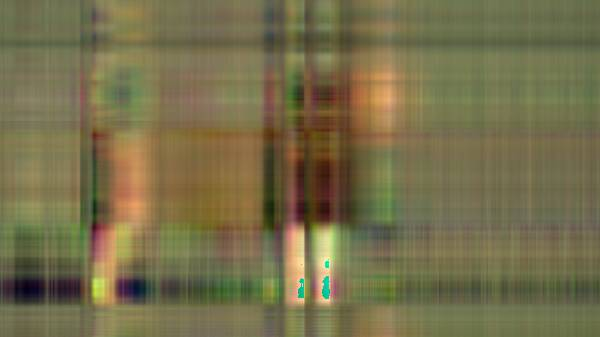

based on the idea that if the SVD is known, some of the singular values \(\sigma\) are significant while the others are small and not significant. Thus, if the significant values are kept and the small values are discarded then only the columns of \(U\) and \(V\) corresponding to the singular values are used. We will see in the following example, as more and more singular values are kept, the quality and representation compared to the original image improves.
As mentioned in a previous post, image compression with singular value decomposition is a frequently occurring application of the method. The image is treated as a matrix of pixels with corresponding color values and is decomposed into smaller ranks that retain only the essential information that comprises the image. In this example, we are interested in compressing the below 600x337 image of a lion into a real-valued representation of the picture which will result in a smaller image file size.
The method of image compression with singular value decomposition is based on the idea that if the SVD is known, some of the singular values \(\sigma\) are significant while the others are small and not significant. Thus, if the significant values are kept and the small values are discarded then only the columns of \(U\) and \(V\) corresponding to the singular values are used. We will see in the following example, as more and more singular values are kept, the quality and representation compared to the original image improves.
Image Compression with Singular Value Decomposition
The jpeg package provides handy functions for reading and writing .jpeg files which we will need to turn the image of the lion into a matrix.
library(jpeg)
The readJPEG function is used to convert the image into a matrix
representation.
lion <- readJPEG('lion.jpg')
ncol(lion)
## [1] 600
nrow(lion)
## [1] 337
The output of the function gives us an array of three matrices with 337 rows and 600 columns, the same size as the image. Each matrice represents a color value that comprises the RGB color scale. To perform SVD on these matrices, separate the array into separate objects.
r <- lion[,,1]
g <- lion[,,2]
b <- lion[,,3]
SVD is then performed on the extracted matrices that represent the individual RGB color values.
lion.r.svd <- svd(r)
lion.g.svd <- svd(g)
lion.b.svd <- svd(b)
Collect the results into a list that we will use to reconstruct the original image.
rgb.svds <- list(lion.r.svd, lion.g.svd, lion.b.svd)
With the singular value decompositions computed for the RGB color value matrices, we can take the resulting matrix factorizations and reconstruct the original matrix (image) as we saw in the previous post on SVD as we know that \(A = U\Sigma V^T\).
As mentioned at the beginning of the post, the more significant singular
values we keep results in a more accurate approximation of the original
matrix. We can see this in action below. The following code takes each
decomposed color value matrix and reconstructs the color value array
that comprises the original lion image with increasing ranks. The loop
will approximate the original image with eight different rank values
starting from rank 3 to rank 300. The writeJPEG() function from the
jpeg package takes the approximated color value array and writes it to
a .jpeg.
for (j in seq.int(3, round(nrow(lion), -2), length.out = 8)) {
a <- sapply(rgb.svds, function(i) {
lion.compress <- i$u[,1:j] %*% diag(i$d[1:j]) %*% t(i$v[,1:j])
}, simplify = 'array')
writeJPEG(a, paste('compressed/lion_compressed', '_svd_rank_', round(j,0), '.jpg', sep=''))
}
Rank 3

With just three singular values remaining the resulting image retains very few of the original image's characteristics.
Rank 45
At just rank 45, the resulting image is much more representative of the original.
Rank 88
Rank 130
Rank 173
Rank 215
Rank 258
At rank 300, the resulting compressed image is rather unrecognizable from the original (at least to me).
Rank 300
We can then see how much the SVD compressed the image by finding the percent difference of the compressed images and the original.
original <- file.info('lion.jpg')$size / 1000
imgs <- dir('compressed/')
for (i in imgs) {
full.path <- paste('compressed/', i, sep='')
print(paste(i, ' size: ', file.info(full.path)$size / 1000, ' original: ', original, ' % diff: ', round((file.info(full.path)$size / 1000 - original) / original, 2) * 100, '%', sep = ''))
}
## [1] "lion_compressed_svd_rank_130.jpg size: 36.608 original: 52.05 % diff: -30%"
## [1] "lion_compressed_svd_rank_173.jpg size: 37.144 original: 52.05 % diff: -29%"
## [1] "lion_compressed_svd_rank_215.jpg size: 37.559 original: 52.05 % diff: -28%"
## [1] "lion_compressed_svd_rank_258.jpg size: 37.613 original: 52.05 % diff: -28%"
## [1] "lion_compressed_svd_rank_3.jpg size: 15.732 original: 52.05 % diff: -70%"
## [1] "lion_compressed_svd_rank_300.jpg size: 37.621 original: 52.05 % diff: -28%"
## [1] "lion_compressed_svd_rank_45.jpg size: 31.422 original: 52.05 % diff: -40%"
## [1] "lion_compressed_svd_rank_88.jpg size: 35.266 original: 52.05 % diff: -32%"
The rank 300 image has a file size of 37.62KB compared to the original image size of 52.05KB, which results in a 28% smaller file size. We can see the difference in the file sizes quickly converge to around -28%, likely indicating further ranks would not result in a more efficient compression ratio.
Summary
The following post was an example of image compression with singular value decomposition, a typical application of the method in real-world settings. Commercial image compression solutions use a more robust method than what was described here; however, I hope it serves as a good example of the power matrix decomposition methods such as singular value decomposition can have in the real-world.